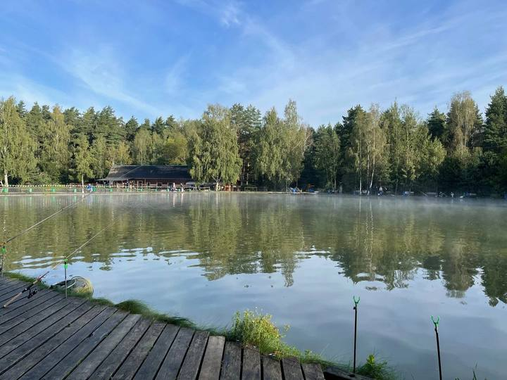
В дикой природе Подмосковья радужную форель не поймать — она здесь просто не живёт. Зато на платных водоёмах её запускают тоннами с сентября по май, и это лучшая «школа» спиннинга: рыба сильная, красивая, бонусом — отличный ужин. Час от дома, никакой лотереи с клёвом, подходит для выезда с семьёй.
Рыба гарантированно есть — зарыбление идёт регулярно, часто при вас. Есть инфраструктура: мостки, беседки, мангалы, прокат снастей, туалет. Для первого выезда и «рыбалки с детьми» — идеальный формат.
Радужная форель активна именно в холодной воде: клюёт с осени до весны, когда «дикая» рыбалка замирает. Бьётся до последнего, делает свечки — эмоций больше, чем от карпа втрое большего веса.
Реально уложиться в 3 000–5 000 ₽ за день: путёвка от 500 ₽ («Баскак») до 5 500 ₽ (безлимит «Острова»), улов — 850–1 600 ₽/кг. Форель в магазине стоит 900–1 400 ₽/кг — так что улов частично «окупает» выезд.
В каждой карточке: шоссе и удалённость от МКАД, цены (сняты с официальных прайсов в июле 2026), особенности — и две кнопки: «Сайт» и «На карте» (работают в электронной версии гида).
Важно: тарифы меняются в течение сезона, а запуски форели зависят от температуры воды. Перед выездом проверяйте прайс и график зарыбления на сайте или в группе ВК водоёма.
Пик — октябрь–декабрь и март–апрель. Лучшее время дня — первые 2–3 часа после рассвета и час после запуска рыбы. В выходные к обеду форель «выбивают» — приезжайте к открытию.
Платите за день, в цену включено 2–15 кг рыбы. Перелов — доплата за кг по прайсу (850–1 500 ₽).
Вход символический (от 500–1 000 ₽), платите только за пойманное: 850–1 600 ₽/кг. Честно для новичка.
Платите за время (3 500–5 500 ₽), весь улов ваш. Лучшая версия — с запуском рыбы «на каждую путёвку».
«Поймал-отпустил»: рыбу не забираете, зато поклёвок максимум. Безбородые крючки. Есть на Бисеровском.
Схема — не для навигации, а для выбора: смотрите своё «домашнее» шоссе и ближайшие точки. Номера соответствуют карточкам; точные координаты — по кнопке «На карте» в каждой карточке.
Единственный полноценный форелевый водоём внутри Москвы, работает 25 лет. Форель 0,8–2,5 кг клюёт круглый год — зимой она главный объект ловли. Снасти и инструктор на месте; ресторан закоптит улов на ольховой щепе через полчаса после поимки.
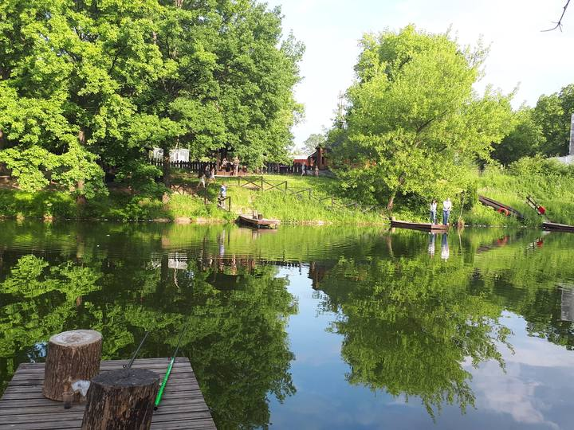
Редкая по честности механика: каждое утро в 9:00 запускают по 5 кг форели на каждую проданную путёвку. Ловля строго спиннинговая — без пасты, донок и даже подсака: настоящая «эриа»-школа. После рыбалки — глэмпинг-дома и бани; по выходным — бесплатная уха.
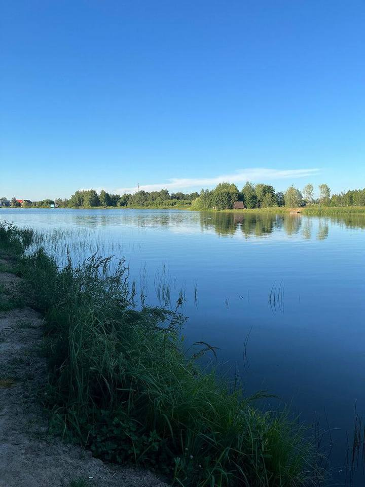
Единственный в гиде платник с полным форелевым циклом: рыбу выращивают здесь же из малька на натуральных кормах — зарыбление стабильное, а мясо упругое, как у дикой. Вокруг — экодеревня с бассейном, спа и рестораном. Зимой — со льда, после — баня и купель.
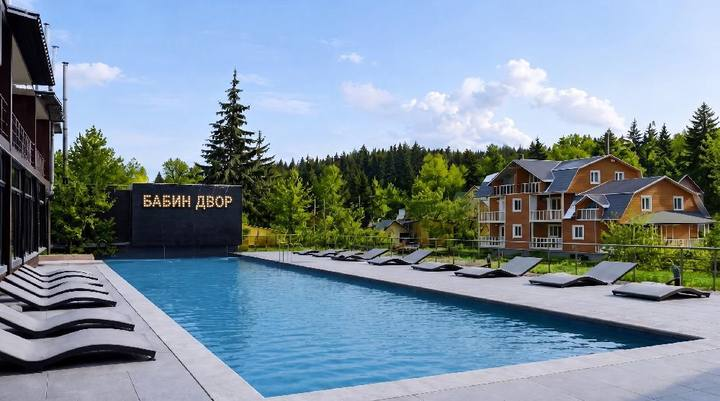
Форелевый участок легендарного Клинского рыбхоза: отдельный пруд с помостами, мощное зарыбление и самый дешёвый перелов форели в гиде. Зимой проживающим в домиках дарят 8 бесплатных часов на льду. Ветка отчётов на Русфишинге ведётся годами.
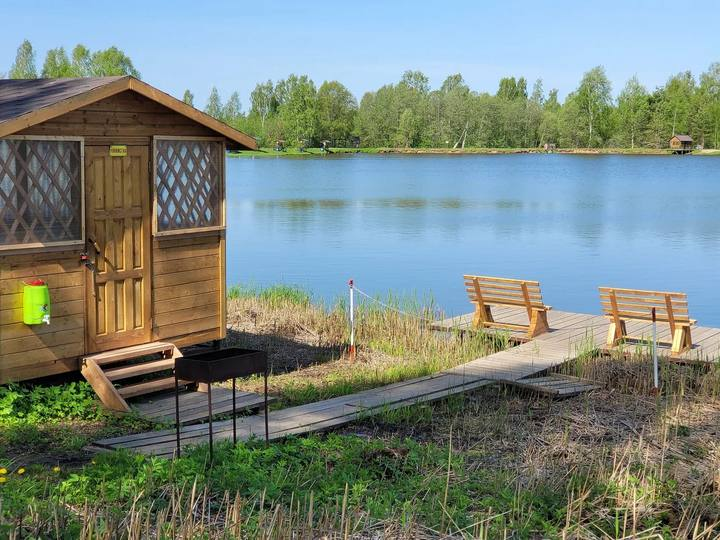
Старейший премиум-клуб области (с 1991 года): три естественных проточных водоёма — форели в такой воде комфортнее, чем в копаных прудах. Егеря, рестораны, детский клуб; для знакомства — недорогой формат Fast-fishing. Билет работает как депозит и закрывает первые 5 000 ₽ улова.
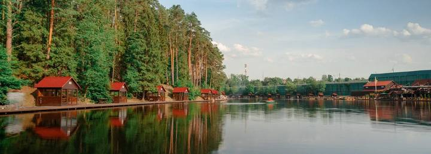
Самая доступная форель гида: 1 100 ₽/кг из водоёма, а по будням — акция 3 000 ₽ с запуском 3 кг на путёвку. Навеска серьёзная: 1,3–2,7 кг, попадаются и «трёшки»; свежая партия в садках перед каждыми выходными. 12 прудов — простор даже в выходные, домики для ночёвки.
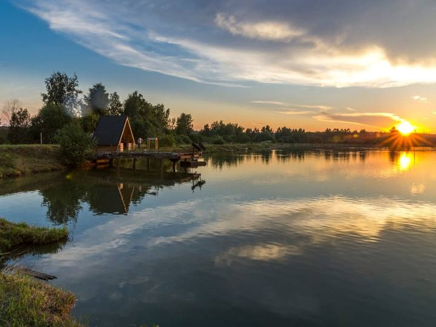
Первое частное рыболовное хозяйство России (с 1991 года) и самая дальняя точка гида — зато путёвка всего 1 000 ₽ без нормы вылова: платите только за пойманное. Радужная и янтарная форель до 3 кг в отдельном пруду с тёплыми беседками у воды; шале с собственными пирсами — «рыбалка в тапочках».
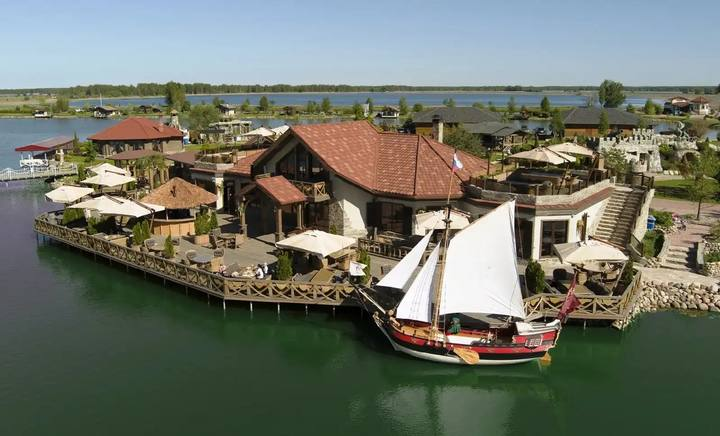
Самый дешёвый вход на форель в гиде: путёвка на отдельный «Форелевый VIP»-пруд — 700 ₽, дальше платите за улов. Бонус, которого нет больше нигде в области, — сиговые в соседях: нельма, сиг, муксун. ECOpod-домики бронируют за месяцы вперёд — планируйте заранее.
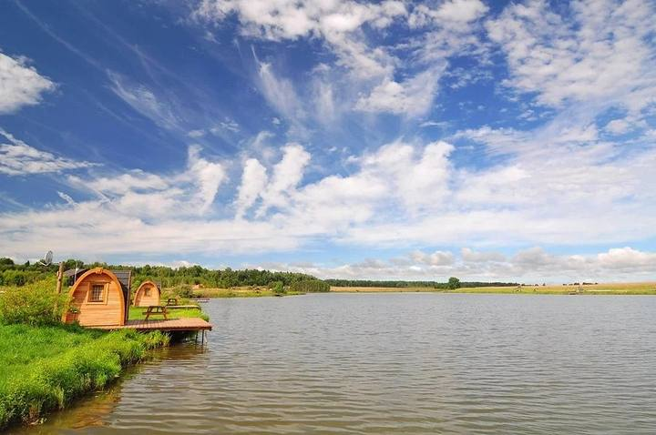
Самая близкая к МКАД точка юга и одна из самых честных механик: безлимит форели с ежедневным запуском с 9:40, объём привязан к числу путёвок — а их не больше 30 в день, толпы не будет. Бонус для коллекционеров видов — голец. Тёплые беседки, ресторан и фастфуд прямо у пруда.
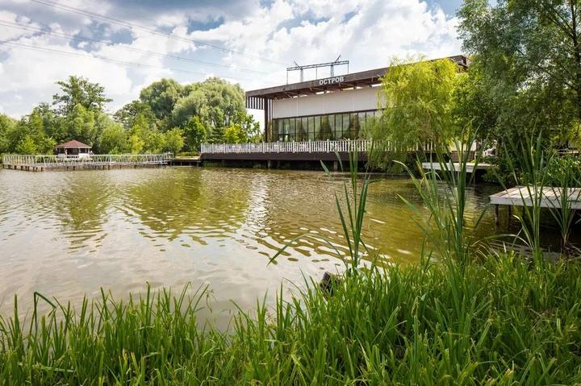
Народный платник с гибкой форелевой линейкой: день безлимита за 4 500 ₽, вечёрка за 2 500 ₽ или честный «поймал-оплатил» после 12:00 — без входного билета, платите только за форель по весу. Запуски и новости — в живой ВК-группе, которая заменяет базе сайт.
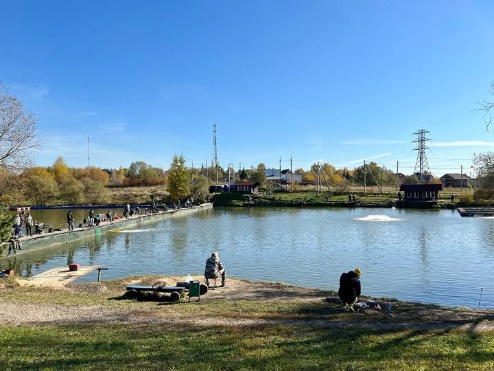
Редкий формат: базовый безлимит — платите за время, вся пойманная форель ваша без доплат за кг. Отдельный форелевый залив с высокой плотностью рыбы и удобными свалами — новичок ловит здесь быстрее, чем где-либо. Жёны и дети проходят с рыбаком. Круглосуточно, зимой — со льда.
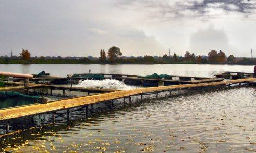
Проточный родниковый пруд с глубинами до 7 м — холодная чистая вода держит форель бодрой всю зиму. Отдельный ВИП-участок работает по схеме «безлимит + запуск на каждую путёвку» дважды в день (8:00 и 12:00). Водоём круглосуточный: можно и на вечёрку, и на сутки.
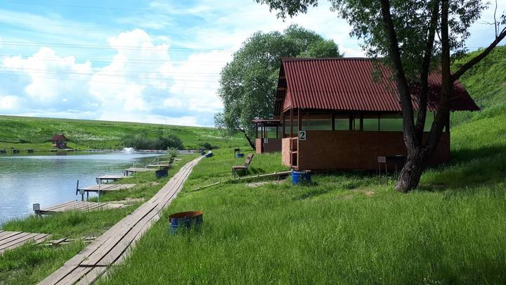
Самая прозрачная форелевая арифметика гида: субботний запуск считается из 5 кг на каждую путёвку и масштабируется по числу рыбаков — 40 человек значит 200 кг. Безлимит по вылову: всё запущенное можно забрать. Фирменный бонус — бесплатная доп. снасть за свежий отчёт на Русфишинге.
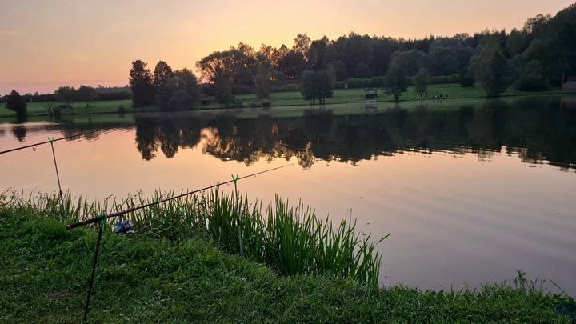
«Душевная рыбалка в лесу» — так клуб называет себя сам: три пруда в лесном массиве, под форель отведён отдельный водоём. Вход из самых доступных на востоке — 670 ₽ в будни, дальше платите только за улов. Правила строгие и честные: весь улов взвешивается, алкоголь запрещён. Зимой — тёплые беседки с каминами.
Домашняя атмосфера в четверти часа от МКАД: большой пруд с кабинками и мостиками, всё «по-простому» — платите за время без нормы вылова и за пойманное по весу. Фирменный финал рыбалки — копчение форели прямо на месте (400 ₽/шт) и банный чан на дровах у воды.
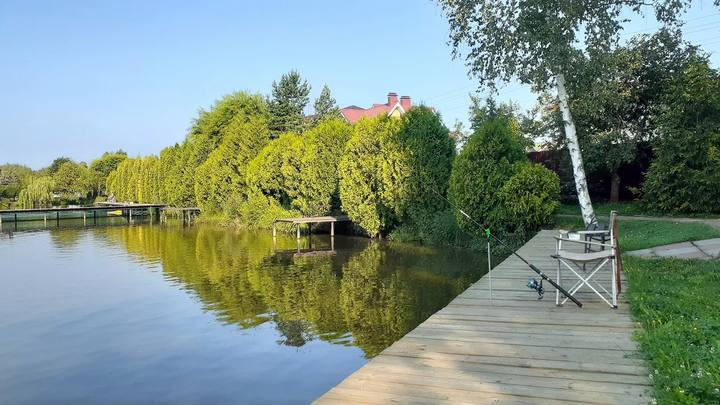
Редкий для востока формат «всё включено»: форель сразу входит в норму путёвки — 3 кг на главной акватории, без доплат до перелова. По будням ощутимо дешевле. Вокруг — эко-отель с баней, купелью и рыбным рестораном, который принесёт готовую форель прямо к мосткам.
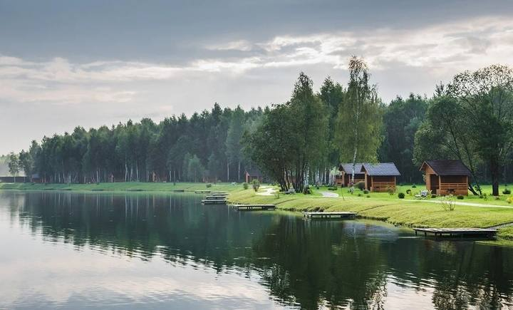
Четыре песчаных озера в сосновом лесу у речки Лашутки; форель — на отдельном Малом озере с самой щедрой нормой гида: до 15 кг на путёвку. Уникальный формат проживания — плавдома прямо на воде; гостям коттеджей рыбалка на Большом озере бесплатна. Бронировать рыбалку не нужно.
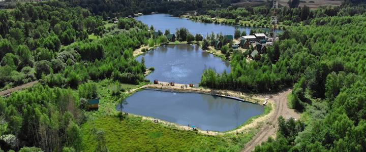
Старейший промышленный рыбокомбинат области (600–700 тонн рыбы в год): форель выращивают здесь же, зарыбление стабильно по определению. На форелевом пруду Н-6 — редкий для востока C&R-сектор «поймал-отпустил» для тех, кому нужны поклёвки, а не килограммы. Вход на остальные пруды — от 500 ₽.
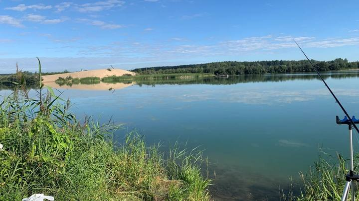
Народный парк рыбалки на два водоёма — Еганово (3,5 га) и озеро Игумново (8 га, периметр 2,5 км) — с честной позицией «мы не рыбхоз и рыбу не кормим»: клёв здесь на голодную рыбу. Форелевая зона работает по простой схеме: день без нормы вылова. 43 беседки вдоль берегов и дома для ночёвки — удобно на компанию.
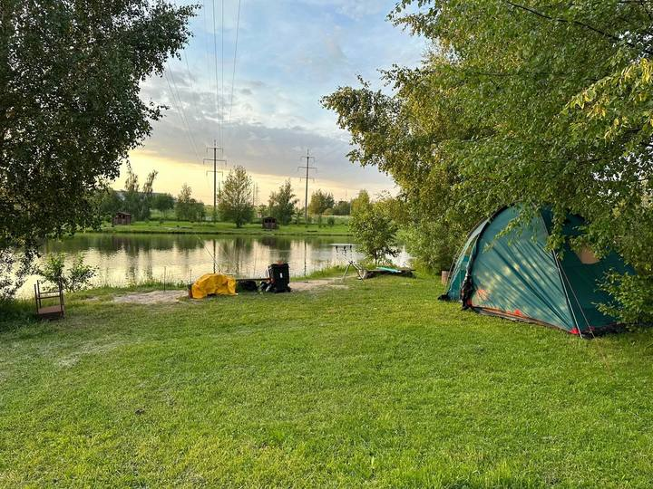
Самый необычный формат гида: зимняя ловля форели с ночёвкой в настоящей войлочной юрте с дровяной печью. Вход зимой всего 500 ₽ плюс улов по весу; форель клюёт со льда и по открытой воде до конца мая, летом пруд переходит на карпа. Атмосфера дальней экспедиции — при этом всё цивилизованно: баня-бочка, коптильня, магазин.
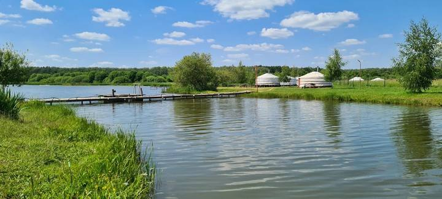
Без машины — «Рыбацкая деревня» на ВДНХ. Юг — «Остров» (6 км от МКАД, безлимит) или круглосуточный «Каньон». Север — «Дурыкино» с честным запуском 5 кг на путёвку. Восток — «Фишпарк» с входом 670 ₽. Дёшево и рыбно — «Фишка-Петряиха» (1 100 ₽/кг) или «Львово» (вход 700 ₽). За атмосферой — юрты «Баскака». Новичку проще всего там, где запуск привязан к числу путёвок: «Дурыкино», «Остров», «Каньон», «Новосёлки».
Быстрый выбор по удалённости и бюджету. Цены сняты с официальных прайсов и групп ВК в июле 2026 года.
| № | Водоём | Направление | От МКАД | Вход | Форель |
|---|---|---|---|---|---|
| 1 | «Рыбацкая деревня» | Москва, ВДНХ | в городе | лицензия 1 000 ₽ | 1 350 ₽/кг |
| 2 | «Дурыкино» | Ленинградское ш. | ~30 км | 5 000 ₽ день | безлимит + запуск 5 кг/путёвка |
| 3 | «Бабин Двор» | Ленинградское ш. / М-11 | ~40 км | уточнять | 1 300 ₽/кг (своя ферма) |
| 4 | «Владимировка» | Ленинградское ш., Клин | Клин | 1 800–4 800 ₽ (норма 2–6 кг) | перелов 850 ₽/кг |
| 5 | «Золотой Сазан» | Новорижское + 2 водоёма | 29–47 км | депозит 5 000–8 000 ₽ | 3,3 кг с билета, перелов 1 500 ₽/кг |
| 6 | «Фишка-Петряиха» | Новорижское ш. | 72 км | от 1 000 ₽; акция 3 000 ₽ + 3 кг | 1 100 ₽/кг |
| 7 | «Ихтиолог» | Новорижское ш. | ~120 км | 1 000 ₽ без нормы | 1 590 ₽/кг |
| 8 | «Львово» | Новорижское ш. | ~130 км | 700 ₽ («Форелевый VIP») | 1 100 ₽/кг |
| 9 | Усадьба «Остров» | Каширское ш. | 6 км | 5 500 ₽ безлимит | безлимит + ежедневный запуск |
| 10 | «Рыбацкий кордон» | Каширское ш. / М-4 | ~22 км | 4 500 ₽ день / «поймал-оплатил» | 1 600 ₽/кг |
| 11 | «Ба! Рыбина!» | Каширское ш. / М-4 | ~50 км | 3 500 ₽ / 12 ч | безлимит — весь улов ваш |
| 12 | «Каньон» | Симферопольское ш. | ~17 км | 4 000 ₽ / 12 ч (вечёрка 1 500 ₽) | безлимит + запуск 4 кг/путёвка |
| 13 | «Новосёлки» / N-FISHER | Киевское/Калужское напр. | Наро-Фоминск | 4 000 ₽ день | безлимит; запуск 5 кг/путёвка |
| 14 | «Фишпарк» | Щёлковское ш. | ~18 км | 670 ₽ будни / 990 ₽ вых. | 1 280 ₽/кг |
| 15 | «Рыбалка у Иваныча» | Щёлковское ш. | ~15 км | 3 000 ₽ день | 1 200 ₽/кг |
| 16 | «Золотые караси» | Щёлковское ш. | ~30 км | 4 000 / 4 500 ₽ с нормой 3 кг | в норме; перелов 1 330 ₽/кг |
| 17 | «Литвиново» | Фряновское ш. | ~30 км | 3 500 / 4 000 ₽ | норма до 15 кг; перелов 1 500 ₽/кг |
| 18 | Бисеровский рыбокомбинат | Горьковское ш. | ~10 км | 3 500 ₽ (C&R) / 4 700 ₽ | 1 100 ₽/кг |
| 19 | «Лагуна» | Новорязанское ш. | ~25 км | 4 500 ₽ день | без нормы вылова |
| 20 | «Баскак» | Новорязанское ш. (М-5) | ~85 км | 500 ₽ (зима) | ~1 050–1 100 ₽/кг |
Все цены — с официальных сайтов и групп ВК водоёмов, сняты в июле 2026 года. Тарифы меняются в течение сезона — перед выездом сверяйтесь с прайсом по кнопке «Сайт» в карточке. На большинстве водоёмов женщины и дети ловят бесплатно на снасти рыбака. Совет из практики: хороший платник зарыбляет минимум раз в неделю — звоните и спрашивайте прямо: «Когда запускали форель и какой навески?» Мелочь 300–400 г или запуск двухнедельной давности — повод выбрать другой адрес из гида.
У каждого водоёма свои нюансы, но эти правила почти универсальны. Знаете их — не попадёте на штраф и не испортите рыбалку соседям.
Если в путёвку включено 3 кг — всё, что поймали сверх, вы обязаны выкупить по прайсу. Отпускать «лишнюю» рыбу на kill-секторах запрещено: травмированная форель погибает («Баскак» прямо объясняет это в правилах). Хотите ловить много и отпускать — берите C&R-путёвку (есть на Бисеровском).
На многих водоёмах трофейные экземпляры подлежат обязательному отпуску или оплате по кратной сетке: у «Золотого Сазана» форель 4+ кг идёт по двойному–тройному тарифу, на «Кордоне» трофей 5+ кг — отпуск со звонком администратору либо тройная цена. Уточняйте при покупке путёвки.
Стандарт: 1–3 снасти на путёвку, доп. снасть — 300–1 500 ₽. Живца и принесённую рыбу запрещают практически все платники — так заносят инфекции. Многие запрещают и прикормку на форелевых прудах («Фишка», «Каньон», «Фишпарк»), а «Дурыкино» — всё, кроме спиннинга.
На большинстве платников подсак с силиконовой сеткой обязателен («Владимировка» без него вообще не пускает ловить, на «Каньоне» обязателен и садок). Но есть исключения: в «Дурыкино» подсак, наоборот, запрещён. Правила конкретного водоёма всегда главнее общих привычек.
Часть платников берёт возвратный залог наличными: «Ба! Рыбина!» и «Каньон» — 1 000 ₽, «Кордон» — 1 500 ₽. Возвращают при закрытии путёвки и соблюдении правил. Держите наличку — на дальних водоёмах со связью и терминалами бывает туго.
Не вставайте ближе 10–15 м к соседу без спроса и не забрасывайте в чужой сектор. Свежезапущенную рыбу, которая ещё не «отошла» после выгрузки, вылавливать нельзя — на «Лагуне» это приравнено к браконьерству. Дождитесь, пока стая разойдётся.
Рыбу предъявляют на взвешивание целиком, не потрошёной; улов до взвешивания держат в садке. Свои весы-безмен помогут прикинуть вес заранее. На строгих водоёмах («Фишпарк») сокрытый улов — штраф и двойная цена. Чек сохраняйте до выезда с территории.
«Эриа»-ловля (area fishing) — самый азартный способ. Вот комплект, с которым не будет мучительно больно ни на первом выезде, ни через год.
Форелевые колебалки 1,5–3,5 г — основа основ. Начните с 6–8 штук контрастных пар: кислотная/тёмная, серебро/медь. Медленная равномерная проводка с паузами.
Кренки 25–38 мм — мелководные и с заглублением до 1,5 м. Спасают, когда форель стоит в толще и игнорирует железо.
«Резина» на джиг-головке 0,4–1,5 г — съедобный силикон 1,5–2 дюйма. Медленная ступенька у дна для пассивной рыбы.
Форелевая паста и креветка (где разрешены) — на поплавок или донку. Обычная варёная креветка — одна из лучших наживок; на «Ихтиологе» зимой поставушки с пастой и креветкой прямо предусмотрены правилами.
Зимой со льда — балансиры 3–5 см (где разрешены), мормышка с пастой, безнасадка. На незамерзающих прудах спиннинг работает круглый год.
Узнайте у администратора точку и время последнего запуска — свежая форель 1–2 дня держится стаей у места высадки. Начинайте с колебалки на счёт «3», каждые 5–7 забросов меняйте горизонт или цвет. Нет поклёвок 20 минут — меняйте тип приманки, а не точку. На глубоких водоёмах («Каньон», Лыткарино) считайте до 5–8: рыба часто стоит в толще.
Этот гид собрала команда интернет-магазина «Ремингтон». Мы одеваем рыбаков, которым не страшны ни октябрьская морось, ни январский лёд: термобельё, костюмы, сапоги ЭВА, перчатки и всё, что делает день на пруду комфортным.
Скидка 10% на первый заказ для читателей гида. Введите промокод в корзине — он действует на всю экипировку для зимней и демисезонной рыбалки. Срок действия промокода уточняйте в рассылке.
Демисезонные мембраны и зимние «поплавки» — под любой формат: ходовая ловля или засада у лунки.
Правильная база из чек-листа на стр. 13 — чтобы три слоя работали, а не грели по отдельности.
Сапоги ЭВА до −40°, перчатки, баффы, термосы — мелочи, которые решают на льду.